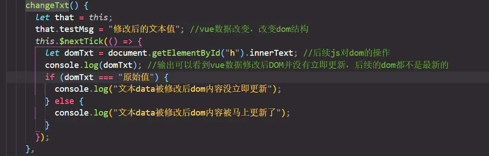

Vue.$nextTick()
Vue 实现响应式并不是数据发生变化之后 DOM 立即变化，而是按⼀定的策略进行DOM 的更新。$nextTick 是在下次 DOM 更新循环结束之后执⾏延迟回调，在修改数据之后使用 $nextTick，则可以在回调中获取更新后的 DOM，在下次 DOM 更新循环结束之后执行延迟回调。
简单的理解是：当数据更新了，在dom中渲染后，自动执行该函数
Vue在更新data之后并不会立即更新DOM上的数据，就是说如果我们修改了data中的数据，再马上获取DOM上的值，我们取得的是旧值，我们把获取DOM上值的操作放进$nextTick里，就可以得到更新后得数据。

正确的⽤法是：vue改变data中的数据后，使⽤vue.$nextTick()⽅法包裹js对象执行后续代码

什么时候使用$nextTick
1、Vue⽣命周期的created()钩⼦函数进⾏的DOM操作⼀定要放在Vue.nextTick()的回调函数中，原因是在created()钩⼦函数执⾏的时候,DOM 其实并未进⾏任何渲染，⽽此时进⾏DOM操作⽆异于徒劳，所以此处⼀定要将DOM操作的js代码放进Vue.nextTick()的回调函数中。2、当项⽬中改变data函数的数据，想基于新的dom做点什么，对新DOM⼀系列的js操作都需要放进Vue.nextTick()的回调函数中
$nextTick（）执行原理
Vue 在更新 DOM 时是异步执行的。只要侦听到数据变化，Vue 将开启一个任务队列，并缓冲在同一时间循环中发生的所有数据变更。如果同一个 watcher 被多次触发，只会被推入到队列中一次。（这种在缓冲时去除重复数据对于避免不必要的计算和 DOM 操作是非常重要的）
然后，在下一个的事件循环“tick”中，Vue 刷新队列并执行任务队列 (已去重的) 工作。
Vue 在内部对异步队列尝试使用原生的 Promise.then（微任务）、MutationObserver 和 setImmediate，如果执行环境不支持，则会采用 setTimeout(fn, 0)（宏任务）代替。
二、JS 运行机制
JS 执行是单线程的，它是基于事件循环的。事件循环大致分为以下几个步骤：
所有同步任务都在主线程上执行，形成一个执行栈
主线程之外，还存在一个”任务队列”（task queue）。
只要异步任务有了运行结果，就在”任务队列”之中放置一个事件。
一旦”执行栈”中的所有同步任务执行完毕，系统就会读取”任务队列”，看看里面有哪些事件。那些对应的异步任务，于是结束等待状态，进入执行栈，开始执行。主线程不断重复上面的第三步。
主线程的执行过程就是一个 tick，而所有的异步结果都是通过 “任务队列” 来调度。”任务队列”中存放的是一个个的任务（task）。规范中规定 task 分为两大类，宏任务和微任务
微任务，也称job
通常用于在当前正在执行的脚本之后直接发生的事情，比如对一系列的行为做出反应，或者做出一些异步的任务，而不需要新建一个全新的task。只要执行栈没有其他javascript在执行，在每个task结束时，微任务队列就会在回调后处理。在微任务期间排队的其他微任务将被添加到这个队列的末尾
常见的 微任务 有 MutationObsever 、 Promise.then 、$nextTiock
宏任务
作用是为了让浏览器能够从内部获取javascript / dom的内容并确保执行栈能够顺序进行。调度是随处可见的，例如解析HTML，获得鼠标点击的事件回调等等。
常见的 宏任务 有 setTimeout、MessageChannel、postMessage、setImmediate；
vue进行DOM更新内部也是调用nextTick来做异步队列控制。而当我们自己调用nextTick的时候，它就在更新DOM的那个micro task后追加了我们自己的回调函数，从而确保我们的代码在DOM更新后执行。
setTimeout是宏任务：只是延迟执行，在延迟执行的方法里，DOM有可能会更新也有可能没有更新。